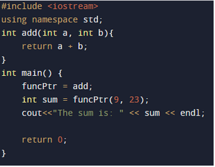
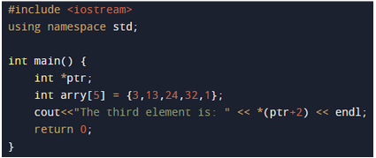

WESTERN PACIFIC UNIVERSITYFINAL EXAMINATION - SEMESTER 2, 2022CMN124/CMP124: Programming in C++Duration: 2Hrs Total Marks: 55 Part A - Multiple Choice and True and False - Question 1 - Question 13 - 2 marks each Part B- Short Answers - Question 14 - Question 21 - 3 marks each Part C- Matching - Question 22 - 5 marks |
| Question 1 | In class, data members are also called as ____________ (2 marks) |
|
| Question 2 | Which of the following two entities (reading from Left to Right) can be connected by the dot operator. (2 marks) |
|
| Question 3 | Which of the following keyword is used to control access to a class member. (2 marks) |
|
| Question 4 | The dynamic objects are created with the help of _______. (2 marks) |
|
| Question 5 | Data hiding is made possible with the help of ________. (2 marks) |
|
Question 6 | What is a copy constructor? (2 marks) |
|
| Question 7 | What is the role of a constructor in classes? (2 marks) |
|
Question 8 | What would be the missing code for the C++ program? (2 marks) |
|
| Question 9 | What will be the output of the following code? (2 marks) |
|
Question 10 | When individual objects are created, they inherit all the variables and functions from the class. (2 marks) |
|
| Question 11 | Dynamic Objects are created in compile-time. (2 marks) |
|
Question 12 | Destructors require any argument and it returns a value. (2 marks) |
|
| Question 13 | Destructors are automatically called when objects go out of scope. (2 marks) |
|
| Question 14 | Using the class name, Employer and pointer name, empPtr.
Write the syntax for dynamic assigning an object to the pointer in a single line. (3 marks) *Note not forget the semicolons |
_________________________________ |
| Question 15 | It is a user defined data type that is public by default. (3 marks) | _________________________________ |
| Question 16 | Write down the missing pointer declaration. It is case sensitive. (3 marks)  |
___________________________________. |
| Question 17 | Write the line of code that is missing to print out the output 24. (3 marks) *Note: Line of code you enter must be case sensitive.  |
______________________________. |
| Question 18 | Under the function printSum, write out the missing code that would print the output of 16. (3 marks) |
_________________________________ |
| Question 19 | What is the name constructor that arguments are passed to? (3 marks) |
______________________________. |
| Question 20 | What will be the output of the following code? (3 marks) |
_________________________________. |
| Question 21 | It is a blueprint that defines certain characterics and behavior. It is simply a representation of different types of objects. (3 marks) |
______________________________. |